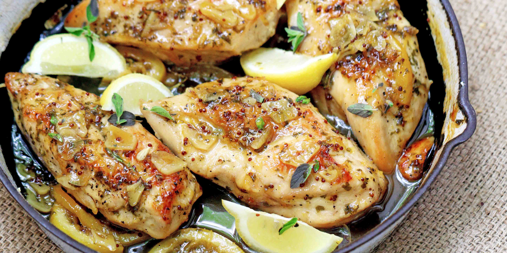

Grandma's Lemon Oregano Chicken

Juicy One Pan Chicken Recipe
This recipe is easy to prepare in an evening & usually you will usually have all the ingredients on hand!
The white wine adds a depth of flavor and prevents the chicken from drying out, while the cayenne pepper gives it just the right hint of heat (;
Ingredients
(Serves 4)
- 1.5 ~ 2 lbs chicken breasts
- 1 clove garlic - minced
- 1 lemon thinly sliced (or 2 lemons quartered for extra citrus)
- 1 large tomato - chopped
- 1/2 c kalamato olives - chopped
- 1/4 c onion - chopped
- 1 T fresh oregano (or 1 t dried)
- 1/4 c dry white wine (chardonnay if you want to drink the rest)
- 3/4 c chicken broth
- 2 med sweet peppers - cut into strips
Steps
- Season chicken w/ salt & pepper & cook over med heat till lightly browned using a cast iron skillet & olive oil
- Place dry ingredients over chicken (set sweet peppers & 1/2 lemon & tomato aside for now) & sprinkle all w/ cayenne
- Add wine & broth - cover & simmer for 15 mins
- Add sweet peppers & remaining tomato - cover & cook 5-10 mins until the peppers are crisp
- Garnish w/ remaining lemon & oregano
- Serve alongside your favorite sides like brown rice, quinoa, or asparagus!
Tips & Substitutions
- Swap equal parts wine for 1/4 c of broth if running low
- Or leave the wine out entirely & use 1 c broth
- Swap lemon juice for the fresh lemons